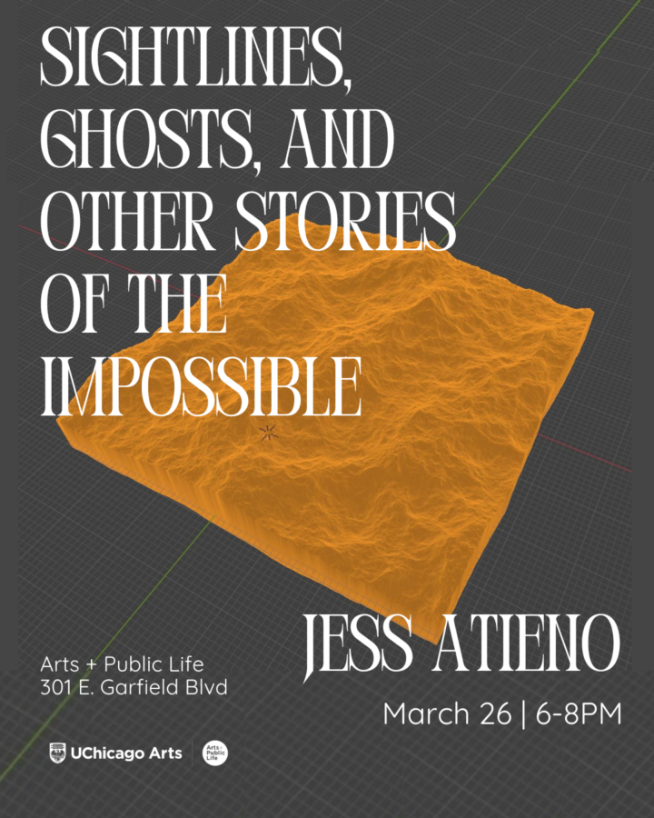

Jess Atieno: Sightlines, Ghosts, and Other Stories of the Impossible
This exhibition considers the shifting legacy of African modernism through the afterlives of independence-era architecture. Once positioned as markers of a newly imagined modern Africa, many Brutalist and modernist structures now exist in states of weathering and transformation, revealing modernism as unstable, incomplete, and continually renegotiated. Rather than signaling failure, these conditions point to modernism as an ongoing and unresolved project shaped by political promise. In dialogue with Black diasporic histories across the Atlantic and Indian Ocean worlds, the work engages water, sound, and circulation as spatial forces that complicate architectural permanence.
Through sculptural works that engage concrete, replication, and embedded sonic elements, Jess Atieno (2023 Arts + Public Life Artist-in–Residence) considers architecture as an atmospheric and felt condition—with sound operating as presence. Space is experienced as continuous, immersive, disorienting, and inescapable yet ambient. The project treats modernism as an evolving formation shaped by environmental forces, infrastructural circulation, and lived spatial realities. It points toward expansive diasporic and circulatory formations of Black life that exceed fixed geography. Past, present, and future operate simultaneously, the future less a distant horizon than something already unfolding across material and environmental realities. In this moment, the exhibition asks viewers to consider how the present is shaped by what refuses to become past.
ABOUT THE ARTIST:
Kenyan artist Jess Atieno maintains a practice informed by inquiries on place, home and dispossession through the lens of the post-colonial. Atieno sees herself as carrying inscriptions of a colonial past and studying as an adult in the US made her increasingly unable to situate herself in a static reality of belonging. With this inspiration, she time travels into history through its material remains: historical photographs, maps and documents, employing them in prints, installations and tapestry. She turns to the idea of place as the transformative site of hybridity that offers alternative strategies for and models of representation within the post-colonial. Atieno holds an MFA from The School of the Art Institute of Chicago and is an alum of Asiko Art School. Her work has shown in Kenya, Ethiopia, Nigeria, Angola, Austria, Germany, Ivory Coast and the United States. Atieno is also the founder the Nairobi Print Project.